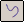

Create a curve segment
-
Choose Home tab→Segments group→Curve Segment

. -
Select the path segments that you want the curve to follow.
-
Select the Curve Fit for the curve to follow.
-
Select the path.
-
Click the Accept (check mark) button on the command bar.
-
Click the Preview button on the command bar.